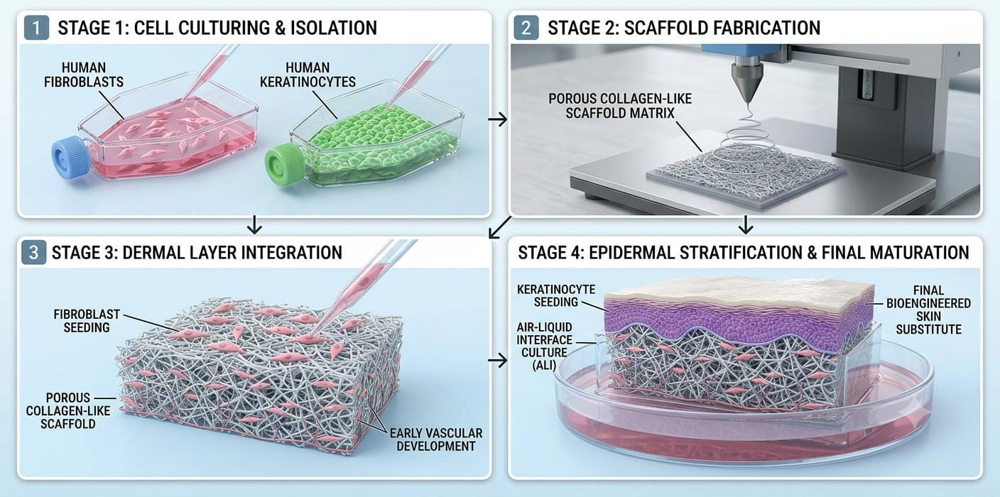
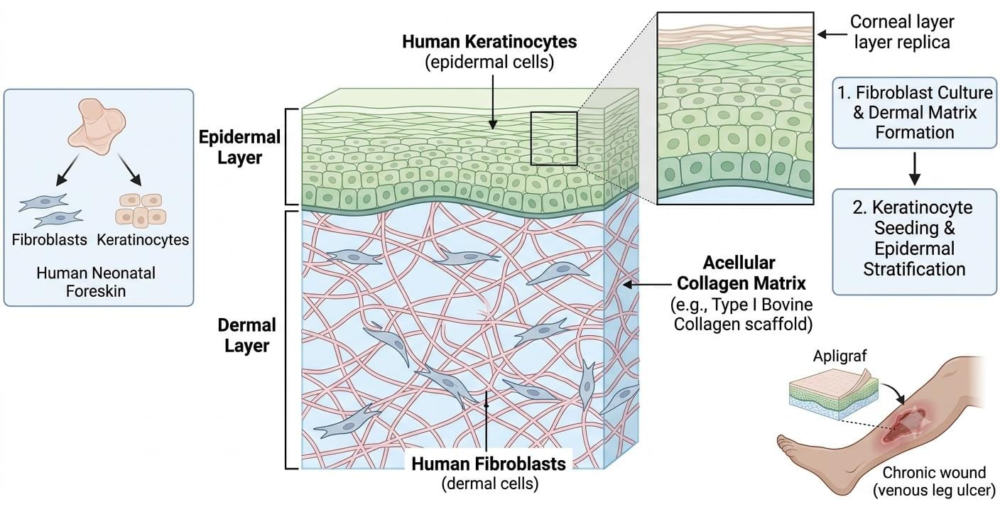

To overcome the severe limitations of traditional autografting—primarily donor site morbidity and limited tissue availability—the field of reconstructive burn surgery has increasingly integrated principles of tissue engineering. Bioengineered Skin Substitutes (BSS) represent a paradigm shift in wound care. Rather than simply transferring intact tissue from one anatomical site to another, these advanced therapeutics aim to reconstruct the skin using a combination of biomaterials, isolated cellular components, and biologically active molecules.
The conceptual foundation of any bioengineered substitute relies on the "tissue engineering triad": a structural scaffold (which mimics the extracellular matrix), living cells (such as fibroblasts and keratinocytes to drive regeneration), and growth factors

As illustrated in Fig v, the manufacturing of a living skin substitute begins with a small biopsy from a healthy human donor (either autologous or allogeneic). The specific cells—epidermal keratinocytes and dermal fibroblasts—are enzymatically isolated and expanded in vitro in specialized bioreactors. Once sufficient cellular mass is achieved, the fibroblasts are seeded onto a three-dimensional biocompatible scaffold (such as bovine collagen or synthetic polymers). Following dermal maturation, keratinocytes are seeded on the top surface and exposed to an air-liquid interface to encourage epidermal stratification and cornification, ultimately producing a construct that functionally mimics human skin.
Bioengineered skin substitutes serve multiple physiological roles upon application. They immediately restore the epidermal barrier to prevent fluid loss and microbial invasion, while simultaneously delivering concentrated cytokines and structural proteins into the wound bed to stimulate the patient's own native healing pathways.
Bioengineered skin substitutes are highly diverse and are generally classified based on their anatomical structure (epidermal, dermal, or composite) and their biological composition (cellular vs. acellular). The selection of a specific substitute depends entirely on the depth of the wound and whether the clinical goal is temporary coverage or permanent dermal regeneration. The table below categorizes the primary types of bioengineered skin substitutes used in modern clinical practice.
| Substitute Category | Composition & Structure | Clinical Indication | Advantages & Disadvantages |
|---|---|---|---|
|
Epidermal Substitutes (e.g., Cultured Epidermal Autografts - CEA) |
Pure layers of cultured keratinocytes without a dermal matrix. | Extensive superficial burns; used alongside meshed autografts to cover massive TBSA. |
Advantage: Can cover
vast areas from a small biopsy. Disadvantage: Extreme fragility, high failure rate, prone to severe blistering and contracture due to lack of dermis. |
|
Dermal Substitutes (e.g., Integra, MatriDerm) |
Acellular matrices (ADMs) composed of collagen, glycosaminoglycans, or elastin. | Deep partial-thickness and full-thickness burns; reconstructive surgery. |
Advantage: Provides a
permanent scaffold for native cells to
infiltrate and build new dermis. Reduces
scarring. Disadvantage: Requires a two-step surgical procedure (a secondary thin autograft is needed for the epidermis). |
|
Composite Substitutes (e.g., Apligraf, Dermagraft) |
Bilaminar constructs containing both a dermal matrix (with fibroblasts) and an epidermal layer (with keratinocytes). | Chronic non-healing wounds (diabetic foot ulcers, venous leg ulcers); temporary burn coverage. |
Advantage: Mimics
full-thickness skin; actively secretes
growth factors to stimulate healing. Disadvantage: Highly expensive, short shelf-life, and usually rejected by the immune system (acts as a smart biological bandage). |
The transition to composite skin substitutes marked a significant milestone in regenerative wound care. Commercial products such as Apligraf and Dermagraft utilize living allogeneic neonatal cells, which are favored due to their high proliferative capacity and suppressed immunogenicity. Neonatal fibroblasts aggressively secrete vital ECM proteins (collagen, fibronectin) and powerful cytokines (Vascular Endothelial Growth Factor, Transforming Growth Factor-beta) directly into the chronic wound environment.

As depicted in Fig vi, composite substitutes possess a highly organized bilaminar structure. When applied to stalled, non-healing diabetic foot ulcers or venous leg ulcers, these living constructs act as "smart delivery systems." They shift the wound microenvironment out of the destructive inflammatory phase and into the proliferative phase by overwhelming the highly proteolytic enzymes (MMPs) that typically stall chronic wound healing.
Despite their remarkable efficacy in stimulating wound closure, current commercial bioengineered skin substitutes are fundamentally constrained by three major limitations. First, they completely lack a pre-formed vascular network. Upon application, they must survive via plasmatic imbibition until the host vessels can infiltrate the thick construct, which often leads to central necrosis of the graft in poorly perfused wounds. Second, they lack skin appendages such as sweat glands, sebaceous glands, and hair follicles, meaning the regenerated tissue is dry and lacks thermoregulatory capability. Finally, the exorbitant manufacturing costs and strict cold-chain storage requirements limit their widespread global accessibility, restricting their use to specialized tertiary wound care centers.